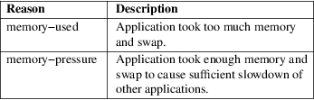

org.freedesktop.oom1 − The D−Bus interface of systemd−oomd
systemd-oomd.service(8) is a system service which implements a userspace out−of−memory (OOM) killer. This page describes the D−Bus interface.
The service exposes the following interfaces on the Manager object on the bus:
node
/org/freedesktop/oom1 {
interface org.freedesktop.oom1.Manager {
methods:
DumpByFileDescriptor(out h fd);
signals:
Killed(s cgroup,
s reason);
};
interface org.freedesktop.DBus.Peer { ... };
interface org.freedesktop.DBus.Introspectable { ... };
interface org.freedesktop.DBus.Properties { ... };
};
Methods
Killed signal is sent when any cgroup is killed by
oomd.
Note that more reasons will be added in the future, and the table below will be expanded accordingly.
Table 1. Killing reasons

These D−Bus interfaces follow the usual interface versioning guidelines [1] .
|
1. |
the usual interface versioning guidelines |
http://0pointer.de/blog/projects/versioning-dbus.html